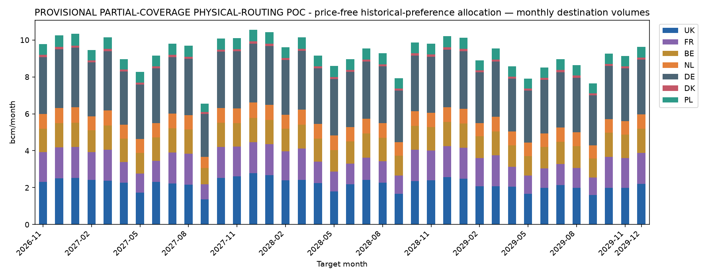
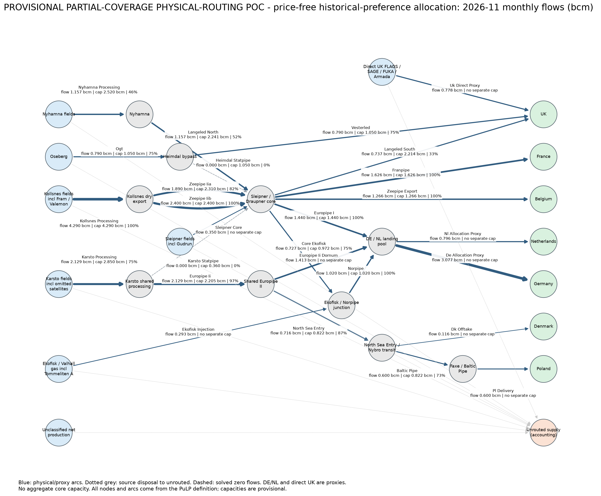

Status: OPTIMAL. Run 20261013T135600399641Z_b99e8ba9.
Open primary analyst workbook · Monthly CSV · Input-source inventory
| item | meaning |
|---|---|
| Run identity | 20261013T135600399641Z_b99e8ba9 |
| Git commit | c18c12e3333437ed4e723943c2f1c8ff471c6f9f |
| Action required | Open Monthly flows; read definitions below before using results. |
| Forecast origin (UTC) | 2026-10-13T13:49:52+00:00 |
| Delivery horizon | 2026-11 to 2029-12; 38 monthly deliveries |
| Prospective assumptions | Core F2.4 provisional approval: selected LNG rate conversion, mixed vintages, frozen net 2024 residual owners, external Trym, export_eligible Heidrun boundary; core_f24_proportional_143. 156 is technical availability, not verified dry export; other future envelopes provisional. No commercial validation. |
| Monthly flows | One target month. Seven nonnegative physical/allocation sinks in bcm; exports exclude unrouted gas. Unclassified supply is included in unrouted, never added twice. |
| Capacities | One asset/month. Monthly available capacity is the calendar-day sum of technical minus signed maintenance mcm/day, divided by 1000. Shared asset limits apply to the sum of its arcs; monthly feasibility is not daily scheduling. |
| Comparisons | One month/group. UK; FR+BE; NL+DE; Baltic Pipe (PL); DK. These overlap country rows and must not be added to them. Unavailable references and errors are missing, never zero. |
| Network flows | One month/arc, including explicit disposal arcs. Arc flows can be nonunique. DE/NL are landing-pool allocation proxies; these are not observed nominations. |
| Diagnostics | Independent solver mass balance/capacity residuals in bcm; not forecast accuracy. Unrouted gas is accounting disposal, not demonstrated curtailment. |
| Input sources | Every required or consumed source and explicit assumption, with identifier, dates, units, transformation and availability status. Exact tables and source metadata are under provenance/inputs and provenance/source_metadata.json. |
| Preferences | Static soft routing shares from earlier complete nonnegative seven-destination baskets; capacity constraints can force rerouting. Price-free objective: maximum exports, minimum L1 deviation, then smallest worst fractional shortfall. |
| Settings | Resolved run request. Canonical model, registry, fixed evaluation policy and source code snapshots are in provenance; manifest records hashes and Git identity. |
| Missing values | Unavailable means not retrieved, unsupported, incompatible or unsolved. It is never an assumed zero. Synthetic references are not invented. |
| Boundaries | UK United Kingdom; FR France; BE Belgium; NL Netherlands; DE Germany; DK Danish gross sink; PL Poland delivery. Historical DK signed net allocation and Poland-labelled Nybro entry are incompatible gross-export comparisons. |
| Country interpretation | UK combines receiving routes; FR/BE represent modelled Dunkerque/Zeebrugge corridors; DE/NL are country-allocation proxies in a shared landing pool; DK/PL are modelled corridor allocations. These seven sinks are not seven independently validated terminal forecasts. Combined comparison groups overlap them. |
| Evaluation | Prospective only: no actuals or scores; historical date guards and 2026 holdout remain locked. |
| month | UK_volume_bcm | FR_volume_bcm | BE_volume_bcm | NL_volume_bcm | DE_volume_bcm | DK_volume_bcm | PL_volume_bcm | total_exports_bcm | unrouted_supply_bcm | pipeline_supply_proxy_bcm | unclassified_supply_bcm | solver_status | national_production_bcm | snohvit_bcm | pipeline_supply_bcm | explicit16_bcm | residual_bcm | heidrun_forecast_bcm | hypothetical_domestic_bcm | external_trym_bcm | mapped_supply_bcm | unmapped_supply_bcm | export_eligible_bcm | national_balance_residual_bcm | network_coverage_pct | pipeline_boundary_coverage_pct | legacy_excluded_uk_direct_bcm | legacy_duplicate_rev_proxy_bcm | forecast_origin |
|---|---|---|---|---|---|---|---|---|---|---|---|---|---|---|---|---|---|---|---|---|---|---|---|---|---|---|---|---|---|
| 2026-11-01 | 2.305 | 1.626 | 1.266 | 0.796 | 3.077 | 0.116 | 0.600 | 9.786 | 0.478 | 10.264 | 0.000 | OPTIMAL | 10.799 | 0.533 | 10.266 | 8.187 | 2.079 | 0.128 | 0.000 | 0.002 | 10.264 | 0.000 | 10.264 | 0.000 | 100.000 | 99.978 | 0.203 | 0.001 | 2026-10-13T13:49:52+00:00 |
| 2026-12-01 | 2.504 | 1.680 | 1.308 | 0.824 | 3.186 | 0.121 | 0.621 | 10.245 | 0.492 | 10.737 | 0.000 | OPTIMAL | 11.292 | 0.552 | 10.739 | 8.507 | 2.233 | 0.128 | 0.000 | 0.002 | 10.737 | 0.000 | 10.737 | 0.000 | 100.000 | 99.977 | 0.216 | 0.001 | 2026-10-13T13:49:52+00:00 |
| 2027-01-01 | 2.522 | 1.680 | 1.308 | 0.836 | 3.232 | 0.122 | 0.630 | 10.331 | 0.451 | 10.782 | 0.000 | OPTIMAL | 11.337 | 0.552 | 10.785 | 8.478 | 2.307 | 0.134 | 0.000 | 0.003 | 10.782 | 0.000 | 10.782 | 0.000 | 100.000 | 99.977 | 0.209 | 0.001 | 2026-10-13T13:49:52+00:00 |
| 2027-02-01 | 2.409 | 1.518 | 1.182 | 0.755 | 2.919 | 0.110 | 0.569 | 9.463 | 0.423 | 9.885 | 0.000 | OPTIMAL | 10.386 | 0.499 | 9.888 | 7.870 | 2.018 | 0.120 | 0.000 | 0.002 | 9.885 | 0.000 | 9.885 | 0.000 | 100.000 | 99.978 | 0.190 | 0.001 | 2026-10-13T13:49:52+00:00 |
| 2027-03-01 | 2.376 | 1.680 | 1.308 | 0.828 | 3.200 | 0.121 | 0.624 | 10.137 | 0.368 | 10.505 | 0.000 | OPTIMAL | 11.058 | 0.551 | 10.507 | 8.378 | 2.129 | 0.081 | 0.000 | 0.002 | 10.505 | 0.000 | 10.505 | 0.000 | 100.000 | 99.978 | 0.183 | 0.001 | 2026-10-13T13:49:52+00:00 |
| 2027-04-01 | 2.268 | 1.124 | 1.266 | 0.747 | 2.885 | 0.109 | 0.563 | 8.962 | 0.242 | 9.204 | 0.000 | OPTIMAL | 9.206 | 0.000 | 9.206 | 7.193 | 2.013 | 0.134 | 0.000 | 0.002 | 9.204 | 0.000 | 9.204 | 0.000 | 100.000 | 99.976 | 0.190 | 0.001 | 2026-10-13T13:49:52+00:00 |
| 2027-05-01 | 1.729 | 1.037 | 1.120 | 0.760 | 2.937 | 0.111 | 0.573 | 8.266 | 0.064 | 8.330 | 0.000 | OPTIMAL | 8.332 | 0.000 | 8.332 | 6.333 | 1.999 | 0.135 | 0.000 | 0.002 | 8.330 | 0.000 | 8.330 | 0.000 | 100.000 | 99.974 | 0.192 | 0.001 | 2026-10-13T13:49:52+00:00 |
| 2027-06-01 | 2.311 | 1.148 | 1.266 | 0.769 | 2.970 | 0.112 | 0.579 | 9.156 | 0.000 | 9.156 | 0.000 | OPTIMAL | 9.647 | 0.489 | 9.158 | 7.247 | 1.911 | 0.115 | 0.000 | 0.002 | 9.156 | 0.000 | 9.156 | 0.000 | 100.000 | 99.977 | 0.225 | 0.001 | 2026-10-13T13:49:52+00:00 |
| 2027-07-01 | 2.232 | 1.680 | 1.308 | 0.793 | 3.063 | 0.116 | 0.597 | 9.790 | 0.000 | 9.790 | 0.000 | OPTIMAL | 10.342 | 0.550 | 9.792 | 7.633 | 2.159 | 0.121 | 0.000 | 0.002 | 9.790 | 0.000 | 9.790 | 0.000 | 100.000 | 99.976 | 0.234 | 0.001 | 2026-10-13T13:49:52+00:00 |
| 2027-08-01 | 2.156 | 1.680 | 1.308 | 0.787 | 3.043 | 0.115 | 0.593 | 9.684 | 0.108 | 9.791 | 0.000 | OPTIMAL | 10.341 | 0.547 | 9.794 | 7.770 | 2.024 | 0.122 | 0.000 | 0.002 | 9.791 | 0.000 | 9.791 | 0.000 | 100.000 | 99.977 | 0.203 | 0.001 | 2026-10-13T13:49:52+00:00 |
| 2027-09-01 | 1.368 | 0.820 | 0.886 | 0.601 | 2.324 | 0.088 | 0.453 | 6.540 | 0.000 | 6.540 | 0.000 | OPTIMAL | 7.070 | 0.528 | 6.542 | 4.612 | 1.930 | 0.121 | 0.000 | 0.002 | 6.540 | 0.000 | 6.540 | 0.000 | 100.000 | 99.968 | 0.124 | 0.001 | 2026-10-13T13:49:52+00:00 |
| 2027-10-01 | 2.534 | 1.680 | 1.308 | 0.790 | 3.055 | 0.116 | 0.596 | 10.078 | 0.122 | 10.201 | 0.000 | OPTIMAL | 10.740 | 0.537 | 10.203 | 7.732 | 2.471 | 0.114 | 0.000 | 0.003 | 10.201 | 0.000 | 10.201 | 0.000 | 100.000 | 99.974 | 0.160 | 0.001 | 2026-10-13T13:49:52+00:00 |
| 2027-11-01 | 2.605 | 1.626 | 1.266 | 0.800 | 3.092 | 0.117 | 0.603 | 10.108 | 0.296 | 10.404 | 0.000 | OPTIMAL | 10.935 | 0.528 | 10.407 | 7.716 | 2.692 | 0.114 | 0.000 | 0.003 | 10.404 | 0.000 | 10.404 | 0.000 | 100.000 | 99.972 | 0.221 | 0.001 | 2026-10-13T13:49:52+00:00 |
| 2027-12-01 | 2.790 | 1.680 | 1.308 | 0.827 | 3.195 | 0.121 | 0.623 | 10.544 | 0.304 | 10.848 | 0.000 | OPTIMAL | 11.398 | 0.547 | 10.851 | 7.979 | 2.872 | 0.116 | 0.000 | 0.003 | 10.848 | 0.000 | 10.848 | 0.000 | 100.000 | 99.971 | 0.234 | 0.001 | 2026-10-13T13:49:52+00:00 |
| 2028-01-01 | 2.676 | 1.680 | 1.308 | 0.825 | 3.190 | 0.121 | 0.622 | 10.422 | 0.275 | 10.697 | 0.000 | OPTIMAL | 11.247 | 0.547 | 10.700 | 7.908 | 2.792 | 0.127 | 0.000 | 0.003 | 10.697 | 0.000 | 10.697 | 0.000 | 100.000 | 99.972 | 0.221 | 0.001 | 2026-10-13T13:49:52+00:00 |
| 2028-02-01 | 2.391 | 1.572 | 1.224 | 0.767 | 2.963 | 0.112 | 0.578 | 9.606 | 0.260 | 9.866 | 0.000 | OPTIMAL | 10.380 | 0.511 | 9.868 | 7.324 | 2.544 | 0.118 | 0.000 | 0.003 | 9.866 | 0.000 | 9.866 | 0.000 | 100.000 | 99.972 | 0.208 | 0.001 | 2026-10-13T13:49:52+00:00 |
| 2028-03-01 | 2.429 | 1.680 | 1.308 | 0.820 | 3.171 | 0.120 | 0.618 | 10.147 | 0.160 | 10.306 | 0.000 | OPTIMAL | 10.855 | 0.545 | 10.309 | 7.637 | 2.672 | 0.108 | 0.000 | 0.003 | 10.306 | 0.000 | 10.306 | 0.000 | 100.000 | 99.972 | 0.199 | 0.001 | 2026-10-13T13:49:52+00:00 |
| 2028-04-01 | 2.249 | 1.149 | 1.266 | 0.780 | 3.015 | 0.114 | 0.588 | 9.161 | 0.000 | 9.161 | 0.000 | OPTIMAL | 9.164 | 0.000 | 9.164 | 6.460 | 2.704 | 0.127 | 0.000 | 0.003 | 9.161 | 0.000 | 9.161 | 0.000 | 100.000 | 99.968 | 0.211 | 0.001 | 2026-10-13T13:49:52+00:00 |
| 2028-05-01 | 1.796 | 1.077 | 1.163 | 0.790 | 3.052 | 0.115 | 0.595 | 8.589 | 0.000 | 8.589 | 0.000 | OPTIMAL | 8.592 | 0.000 | 8.592 | 5.885 | 2.707 | 0.128 | 0.000 | 0.003 | 8.589 | 0.000 | 8.589 | 0.000 | 100.000 | 99.966 | 0.214 | 0.001 | 2026-10-13T13:49:52+00:00 |
| 2028-06-01 | 2.172 | 1.124 | 1.214 | 0.772 | 2.986 | 0.113 | 0.582 | 8.964 | 0.000 | 8.964 | 0.000 | OPTIMAL | 8.967 | 0.000 | 8.967 | 6.450 | 2.517 | 0.108 | 0.000 | 0.003 | 8.964 | 0.000 | 8.964 | 0.000 | 100.000 | 99.969 | 0.240 | 0.001 | 2026-10-13T13:49:52+00:00 |
| 2028-07-01 | 2.426 | 1.198 | 1.308 | 0.801 | 3.097 | 0.117 | 0.604 | 9.551 | 0.000 | 9.551 | 0.000 | OPTIMAL | 10.099 | 0.544 | 9.554 | 6.742 | 2.813 | 0.115 | 0.000 | 0.003 | 9.551 | 0.000 | 9.551 | 0.000 | 100.000 | 99.968 | 0.251 | 0.001 | 2026-10-13T13:49:52+00:00 |
| 2028-08-01 | 2.273 | 1.165 | 1.258 | 0.797 | 3.080 | 0.117 | 0.601 | 9.291 | 0.000 | 9.291 | 0.000 | OPTIMAL | 9.835 | 0.541 | 9.294 | 6.537 | 2.756 | 0.116 | 0.000 | 0.003 | 9.291 | 0.000 | 9.291 | 0.000 | 100.000 | 99.968 | 0.225 | 0.001 | 2026-10-13T13:49:52+00:00 |
| 2028-09-01 | 1.657 | 0.994 | 1.073 | 0.728 | 2.815 | 0.106 | 0.549 | 7.923 | 0.000 | 7.923 | 0.000 | OPTIMAL | 8.449 | 0.523 | 7.926 | 5.424 | 2.502 | 0.090 | 0.000 | 0.003 | 7.923 | 0.000 | 7.923 | 0.000 | 100.000 | 99.966 | 0.145 | 0.001 | 2026-10-13T13:49:52+00:00 |
| 2028-10-01 | 2.363 | 1.680 | 1.308 | 0.783 | 3.026 | 0.114 | 0.590 | 9.865 | 0.078 | 9.943 | 0.000 | OPTIMAL | 10.478 | 0.532 | 9.946 | 7.142 | 2.804 | 0.098 | 0.000 | 0.003 | 9.943 | 0.000 | 9.943 | 0.000 | 100.000 | 99.969 | 0.170 | 0.001 | 2026-10-13T13:49:52+00:00 |
| 2028-11-01 | 2.389 | 1.626 | 1.266 | 0.784 | 3.032 | 0.115 | 0.591 | 9.803 | 0.235 | 10.038 | 0.000 | OPTIMAL | 10.563 | 0.522 | 10.041 | 7.133 | 2.908 | 0.113 | 0.000 | 0.003 | 10.038 | 0.000 | 10.038 | 0.000 | 100.000 | 99.968 | 0.222 | 0.001 | 2026-10-13T13:49:52+00:00 |
| 2028-12-01 | 2.564 | 1.680 | 1.308 | 0.807 | 3.118 | 0.118 | 0.608 | 10.202 | 0.239 | 10.442 | 0.000 | OPTIMAL | 10.987 | 0.541 | 10.445 | 7.391 | 3.054 | 0.114 | 0.000 | 0.003 | 10.442 | 0.000 | 10.442 | 0.000 | 100.000 | 99.968 | 0.233 | 0.001 | 2026-10-13T13:49:52+00:00 |
| 2029-01-01 | 2.476 | 1.680 | 1.308 | 0.808 | 3.122 | 0.118 | 0.609 | 10.121 | 0.212 | 10.333 | 0.000 | OPTIMAL | 10.878 | 0.541 | 10.337 | 7.354 | 2.982 | 0.121 | 0.000 | 0.003 | 10.333 | 0.000 | 10.333 | 0.000 | 100.000 | 99.969 | 0.222 | 0.001 | 2026-10-13T13:49:52+00:00 |
| 2029-02-01 | 2.076 | 1.518 | 1.182 | 0.715 | 2.765 | 0.105 | 0.539 | 8.899 | 0.185 | 9.085 | 0.000 | OPTIMAL | 9.576 | 0.489 | 9.087 | 6.571 | 2.517 | 0.109 | 0.000 | 0.003 | 9.085 | 0.000 | 9.085 | 0.000 | 100.000 | 99.970 | 0.197 | 0.001 | 2026-10-13T13:49:52+00:00 |
| 2029-03-01 | 2.064 | 1.680 | 1.308 | 0.777 | 3.004 | 0.114 | 0.586 | 9.533 | 0.004 | 9.538 | 0.000 | OPTIMAL | 10.080 | 0.540 | 9.540 | 7.006 | 2.534 | 0.096 | 0.000 | 0.003 | 9.538 | 0.000 | 9.538 | 0.000 | 100.000 | 99.971 | 0.187 | 0.001 | 2026-10-13T13:49:52+00:00 |
| 2029-04-01 | 2.062 | 1.074 | 1.160 | 0.740 | 2.861 | 0.108 | 0.558 | 8.562 | 0.000 | 8.562 | 0.000 | OPTIMAL | 9.111 | 0.546 | 8.565 | 5.894 | 2.671 | 0.121 | 0.000 | 0.003 | 8.562 | 0.000 | 8.562 | 0.000 | 100.000 | 99.966 | 0.203 | 0.001 | 2026-10-13T13:49:52+00:00 |
| 2029-05-01 | 1.655 | 0.993 | 1.072 | 0.728 | 2.812 | 0.106 | 0.548 | 7.914 | 0.000 | 7.914 | 0.000 | OPTIMAL | 8.474 | 0.557 | 7.917 | 5.315 | 2.602 | 0.122 | 0.000 | 0.003 | 7.914 | 0.000 | 7.914 | 0.000 | 100.000 | 99.964 | 0.202 | 0.001 | 2026-10-13T13:49:52+00:00 |
| 2029-06-01 | 1.977 | 1.067 | 1.152 | 0.748 | 2.889 | 0.109 | 0.563 | 8.506 | 0.000 | 8.506 | 0.000 | OPTIMAL | 8.998 | 0.489 | 8.509 | 5.904 | 2.605 | 0.101 | 0.000 | 0.003 | 8.506 | 0.000 | 8.506 | 0.000 | 100.000 | 99.967 | 0.234 | 0.001 | 2026-10-13T13:49:52+00:00 |
| 2029-07-01 | 2.145 | 1.123 | 1.213 | 0.776 | 3.000 | 0.113 | 0.585 | 8.957 | 0.000 | 8.957 | 0.000 | OPTIMAL | 9.499 | 0.539 | 8.960 | 6.062 | 2.898 | 0.109 | 0.000 | 0.003 | 8.957 | 0.000 | 8.957 | 0.000 | 100.000 | 99.965 | 0.245 | 0.001 | 2026-10-13T13:49:52+00:00 |
| 2029-08-01 | 1.982 | 1.084 | 1.171 | 0.765 | 2.956 | 0.112 | 0.576 | 8.646 | 0.000 | 8.646 | 0.000 | OPTIMAL | 9.185 | 0.536 | 8.649 | 5.883 | 2.767 | 0.110 | 0.000 | 0.003 | 8.646 | 0.000 | 8.646 | 0.000 | 100.000 | 99.965 | 0.218 | 0.001 | 2026-10-13T13:49:52+00:00 |
| 2029-09-01 | 1.597 | 0.958 | 1.034 | 0.702 | 2.714 | 0.103 | 0.529 | 7.637 | 0.000 | 7.637 | 0.000 | OPTIMAL | 8.157 | 0.517 | 7.640 | 5.017 | 2.623 | 0.073 | 0.000 | 0.003 | 7.637 | 0.000 | 7.637 | 0.000 | 100.000 | 99.963 | 0.147 | 0.001 | 2026-10-13T13:49:52+00:00 |
| 2029-10-01 | 1.989 | 1.680 | 1.308 | 0.742 | 2.869 | 0.109 | 0.559 | 9.256 | 0.081 | 9.337 | 0.000 | OPTIMAL | 9.866 | 0.526 | 9.340 | 6.742 | 2.598 | 0.086 | 0.000 | 0.003 | 9.337 | 0.000 | 9.337 | 0.000 | 100.000 | 99.970 | 0.158 | 0.001 | 2026-10-13T13:49:52+00:00 |
| 2029-11-01 | 1.984 | 1.626 | 1.266 | 0.737 | 2.847 | 0.108 | 0.555 | 9.124 | 0.081 | 9.205 | 0.000 | OPTIMAL | 9.725 | 0.517 | 9.208 | 6.586 | 2.622 | 0.106 | 0.000 | 0.003 | 9.205 | 0.000 | 9.205 | 0.000 | 100.000 | 99.969 | 0.203 | 0.001 | 2026-10-13T13:49:52+00:00 |
| 2029-12-01 | 2.202 | 1.680 | 1.308 | 0.770 | 2.976 | 0.113 | 0.580 | 9.629 | 0.092 | 9.721 | 0.000 | OPTIMAL | 10.261 | 0.536 | 9.725 | 6.838 | 2.886 | 0.107 | 0.000 | 0.003 | 9.721 | 0.000 | 9.721 | 0.000 | 100.000 | 99.968 | 0.219 | 0.001 | 2026-10-13T13:49:52+00:00 |
| month | group | unit | model_bcm | ea_actual_bcm | ea_legacy_forecast_bcm | model_minus_actual_bcm | model_minus_ea_forecast_bcm | status | model_comparable_bcm |
|---|---|---|---|---|---|---|---|---|---|
| 2026-11-01 | UK | bcm/month | 2.305 | None | 2.546 | None | -0.444 | Origin-matched legacy Gassco group; boundary-adjusted descriptive comparison, not forecast scoring; exclude only lineage-supported non-Gassco UK packets once. Legacy duplicate Rev deduction is disclosed, never applied to operational supply. | 2.102 |
| 2026-11-01 | FR+BE | bcm/month | 2.892 | None | 2.617 | None | 0.275 | Origin-matched legacy Gassco group; boundary-adjusted descriptive comparison, not forecast scoring | 2.892 |
| 2026-11-01 | NL+DE | bcm/month | 3.873 | None | 4.265 | None | -0.392 | Origin-matched legacy Gassco group; boundary-adjusted descriptive comparison, not forecast scoring | 3.873 |
| 2026-11-01 | Baltic Pipe | bcm/month | 0.600 | None | Unavailable | None | Unavailable | Unavailable: prospective run does not retrieve actuals or score forecasts | Unavailable |
| 2026-11-01 | DK | bcm/month | 0.116 | None | Unavailable | None | Unavailable | Unavailable: prospective run does not retrieve actuals or score forecasts | Unavailable |
| 2026-12-01 | UK | bcm/month | 2.504 | None | 2.825 | None | -0.536 | Origin-matched legacy Gassco group; boundary-adjusted descriptive comparison, not forecast scoring; exclude only lineage-supported non-Gassco UK packets once. Legacy duplicate Rev deduction is disclosed, never applied to operational supply. | 2.289 |
| 2026-12-01 | FR+BE | bcm/month | 2.988 | None | 2.687 | None | 0.301 | Origin-matched legacy Gassco group; boundary-adjusted descriptive comparison, not forecast scoring | 2.988 |
| 2026-12-01 | NL+DE | bcm/month | 4.010 | None | 4.345 | None | -0.334 | Origin-matched legacy Gassco group; boundary-adjusted descriptive comparison, not forecast scoring | 4.010 |
| 2026-12-01 | Baltic Pipe | bcm/month | 0.621 | None | Unavailable | None | Unavailable | Unavailable: prospective run does not retrieve actuals or score forecasts | Unavailable |
| 2026-12-01 | DK | bcm/month | 0.121 | None | Unavailable | None | Unavailable | Unavailable: prospective run does not retrieve actuals or score forecasts | Unavailable |
| 2027-01-01 | UK | bcm/month | 2.522 | None | 2.920 | None | -0.606 | Origin-matched legacy Gassco group; boundary-adjusted descriptive comparison, not forecast scoring; exclude only lineage-supported non-Gassco UK packets once. Legacy duplicate Rev deduction is disclosed, never applied to operational supply. | 2.313 |
| 2027-01-01 | FR+BE | bcm/month | 2.988 | None | 2.613 | None | 0.376 | Origin-matched legacy Gassco group; boundary-adjusted descriptive comparison, not forecast scoring | 2.988 |
| 2027-01-01 | NL+DE | bcm/month | 4.068 | None | 4.394 | None | -0.326 | Origin-matched legacy Gassco group; boundary-adjusted descriptive comparison, not forecast scoring | 4.068 |
| 2027-01-01 | Baltic Pipe | bcm/month | 0.630 | None | Unavailable | None | Unavailable | Unavailable: prospective run does not retrieve actuals or score forecasts | Unavailable |
| 2027-01-01 | DK | bcm/month | 0.122 | None | Unavailable | None | Unavailable | Unavailable: prospective run does not retrieve actuals or score forecasts | Unavailable |
| 2027-02-01 | UK | bcm/month | 2.409 | None | 2.455 | None | -0.235 | Origin-matched legacy Gassco group; boundary-adjusted descriptive comparison, not forecast scoring; exclude only lineage-supported non-Gassco UK packets once. Legacy duplicate Rev deduction is disclosed, never applied to operational supply. | 2.219 |
| 2027-02-01 | FR+BE | bcm/month | 2.699 | None | 2.636 | None | 0.063 | Origin-matched legacy Gassco group; boundary-adjusted descriptive comparison, not forecast scoring | 2.699 |
| 2027-02-01 | NL+DE | bcm/month | 3.674 | None | 4.026 | None | -0.351 | Origin-matched legacy Gassco group; boundary-adjusted descriptive comparison, not forecast scoring | 3.674 |
| 2027-02-01 | Baltic Pipe | bcm/month | 0.569 | None | Unavailable | None | Unavailable | Unavailable: prospective run does not retrieve actuals or score forecasts | Unavailable |
| 2027-02-01 | DK | bcm/month | 0.110 | None | Unavailable | None | Unavailable | Unavailable: prospective run does not retrieve actuals or score forecasts | Unavailable |
| 2027-03-01 | UK | bcm/month | 2.376 | None | 2.629 | None | -0.436 | Origin-matched legacy Gassco group; boundary-adjusted descriptive comparison, not forecast scoring; exclude only lineage-supported non-Gassco UK packets once. Legacy duplicate Rev deduction is disclosed, never applied to operational supply. | 2.194 |
| 2027-03-01 | FR+BE | bcm/month | 2.988 | None | 2.825 | None | 0.164 | Origin-matched legacy Gassco group; boundary-adjusted descriptive comparison, not forecast scoring | 2.988 |
| 2027-03-01 | NL+DE | bcm/month | 4.028 | None | 4.244 | None | -0.217 | Origin-matched legacy Gassco group; boundary-adjusted descriptive comparison, not forecast scoring | 4.028 |
| 2027-03-01 | Baltic Pipe | bcm/month | 0.624 | None | Unavailable | None | Unavailable | Unavailable: prospective run does not retrieve actuals or score forecasts | Unavailable |
| 2027-03-01 | DK | bcm/month | 0.121 | None | Unavailable | None | Unavailable | Unavailable: prospective run does not retrieve actuals or score forecasts | Unavailable |
| 2027-04-01 | UK | bcm/month | 2.268 | None | 2.015 | None | 0.064 | Origin-matched legacy Gassco group; boundary-adjusted descriptive comparison, not forecast scoring; exclude only lineage-supported non-Gassco UK packets once. Legacy duplicate Rev deduction is disclosed, never applied to operational supply. | 2.078 |
| 2027-04-01 | FR+BE | bcm/month | 2.390 | None | 2.610 | None | -0.220 | Origin-matched legacy Gassco group; boundary-adjusted descriptive comparison, not forecast scoring | 2.390 |
| 2027-04-01 | NL+DE | bcm/month | 3.632 | None | 3.754 | None | -0.122 | Origin-matched legacy Gassco group; boundary-adjusted descriptive comparison, not forecast scoring | 3.632 |
| 2027-04-01 | Baltic Pipe | bcm/month | 0.563 | None | Unavailable | None | Unavailable | Unavailable: prospective run does not retrieve actuals or score forecasts | Unavailable |
| 2027-04-01 | DK | bcm/month | 0.109 | None | Unavailable | None | Unavailable | Unavailable: prospective run does not retrieve actuals or score forecasts | Unavailable |
| 2027-05-01 | UK | bcm/month | 1.729 | None | 1.220 | None | 0.317 | Origin-matched legacy Gassco group; boundary-adjusted descriptive comparison, not forecast scoring; exclude only lineage-supported non-Gassco UK packets once. Legacy duplicate Rev deduction is disclosed, never applied to operational supply. | 1.536 |
| 2027-05-01 | FR+BE | bcm/month | 2.157 | None | 2.584 | None | -0.427 | Origin-matched legacy Gassco group; boundary-adjusted descriptive comparison, not forecast scoring | 2.157 |
| 2027-05-01 | NL+DE | bcm/month | 3.697 | None | 3.677 | None | 0.020 | Origin-matched legacy Gassco group; boundary-adjusted descriptive comparison, not forecast scoring | 3.697 |
| 2027-05-01 | Baltic Pipe | bcm/month | 0.573 | None | Unavailable | None | Unavailable | Unavailable: prospective run does not retrieve actuals or score forecasts | Unavailable |
| 2027-05-01 | DK | bcm/month | 0.111 | None | Unavailable | None | Unavailable | Unavailable: prospective run does not retrieve actuals or score forecasts | Unavailable |
| 2027-06-01 | UK | bcm/month | 2.311 | None | 1.288 | None | 0.798 | Origin-matched legacy Gassco group; boundary-adjusted descriptive comparison, not forecast scoring; exclude only lineage-supported non-Gassco UK packets once. Legacy duplicate Rev deduction is disclosed, never applied to operational supply. | 2.086 |
| 2027-06-01 | FR+BE | bcm/month | 2.414 | None | 2.898 | None | -0.484 | Origin-matched legacy Gassco group; boundary-adjusted descriptive comparison, not forecast scoring | 2.414 |
| 2027-06-01 | NL+DE | bcm/month | 3.739 | None | 4.172 | None | -0.433 | Origin-matched legacy Gassco group; boundary-adjusted descriptive comparison, not forecast scoring | 3.739 |
| 2027-06-01 | Baltic Pipe | bcm/month | 0.579 | None | Unavailable | None | Unavailable | Unavailable: prospective run does not retrieve actuals or score forecasts | Unavailable |
| 2027-06-01 | DK | bcm/month | 0.112 | None | Unavailable | None | Unavailable | Unavailable: prospective run does not retrieve actuals or score forecasts | Unavailable |
| 2027-07-01 | UK | bcm/month | 2.232 | None | 1.511 | None | 0.487 | Origin-matched legacy Gassco group; boundary-adjusted descriptive comparison, not forecast scoring; exclude only lineage-supported non-Gassco UK packets once. Legacy duplicate Rev deduction is disclosed, never applied to operational supply. | 1.998 |
| 2027-07-01 | FR+BE | bcm/month | 2.988 | None | 2.995 | None | -0.006 | Origin-matched legacy Gassco group; boundary-adjusted descriptive comparison, not forecast scoring | 2.988 |
| 2027-07-01 | NL+DE | bcm/month | 3.856 | None | 4.390 | None | -0.534 | Origin-matched legacy Gassco group; boundary-adjusted descriptive comparison, not forecast scoring | 3.856 |
| 2027-07-01 | Baltic Pipe | bcm/month | 0.597 | None | Unavailable | None | Unavailable | Unavailable: prospective run does not retrieve actuals or score forecasts | Unavailable |
| 2027-07-01 | DK | bcm/month | 0.116 | None | Unavailable | None | Unavailable | Unavailable: prospective run does not retrieve actuals or score forecasts | Unavailable |
| 2027-08-01 | UK | bcm/month | 2.156 | None | 1.556 | None | 0.398 | Origin-matched legacy Gassco group; boundary-adjusted descriptive comparison, not forecast scoring; exclude only lineage-supported non-Gassco UK packets once. Legacy duplicate Rev deduction is disclosed, never applied to operational supply. | 1.953 |
| 2027-08-01 | FR+BE | bcm/month | 2.988 | None | 2.995 | None | -0.006 | Origin-matched legacy Gassco group; boundary-adjusted descriptive comparison, not forecast scoring | 2.988 |
| 2027-08-01 | NL+DE | bcm/month | 3.831 | None | 4.389 | None | -0.558 | Origin-matched legacy Gassco group; boundary-adjusted descriptive comparison, not forecast scoring | 3.831 |
| 2027-08-01 | Baltic Pipe | bcm/month | 0.593 | None | Unavailable | None | Unavailable | Unavailable: prospective run does not retrieve actuals or score forecasts | Unavailable |
| 2027-08-01 | DK | bcm/month | 0.115 | None | Unavailable | None | Unavailable | Unavailable: prospective run does not retrieve actuals or score forecasts | Unavailable |
| 2027-09-01 | UK | bcm/month | 1.368 | None | 0.521 | None | 0.722 | Origin-matched legacy Gassco group; boundary-adjusted descriptive comparison, not forecast scoring; exclude only lineage-supported non-Gassco UK packets once. Legacy duplicate Rev deduction is disclosed, never applied to operational supply. | 1.243 |
| 2027-09-01 | FR+BE | bcm/month | 1.706 | None | 2.030 | None | -0.324 | Origin-matched legacy Gassco group; boundary-adjusted descriptive comparison, not forecast scoring | 1.706 |
| 2027-09-01 | NL+DE | bcm/month | 2.925 | None | 3.216 | None | -0.291 | Origin-matched legacy Gassco group; boundary-adjusted descriptive comparison, not forecast scoring | 2.925 |
| 2027-09-01 | Baltic Pipe | bcm/month | 0.453 | None | Unavailable | None | Unavailable | Unavailable: prospective run does not retrieve actuals or score forecasts | Unavailable |
| 2027-09-01 | DK | bcm/month | 0.088 | None | Unavailable | None | Unavailable | Unavailable: prospective run does not retrieve actuals or score forecasts | Unavailable |
| 2027-10-01 | UK | bcm/month | 2.534 | None | 2.297 | None | 0.077 | Origin-matched legacy Gassco group; boundary-adjusted descriptive comparison, not forecast scoring; exclude only lineage-supported non-Gassco UK packets once. Legacy duplicate Rev deduction is disclosed, never applied to operational supply. | 2.373 |
| 2027-10-01 | FR+BE | bcm/month | 2.988 | None | 2.932 | None | 0.056 | Origin-matched legacy Gassco group; boundary-adjusted descriptive comparison, not forecast scoring | 2.988 |
| 2027-10-01 | NL+DE | bcm/month | 3.845 | None | 4.189 | None | -0.344 | Origin-matched legacy Gassco group; boundary-adjusted descriptive comparison, not forecast scoring | 3.845 |
| 2027-10-01 | Baltic Pipe | bcm/month | 0.596 | None | Unavailable | None | Unavailable | Unavailable: prospective run does not retrieve actuals or score forecasts | Unavailable |
| 2027-10-01 | DK | bcm/month | 0.116 | None | Unavailable | None | Unavailable | Unavailable: prospective run does not retrieve actuals or score forecasts | Unavailable |
| 2027-11-01 | UK | bcm/month | 2.605 | None | 2.428 | None | -0.044 | Origin-matched legacy Gassco group; boundary-adjusted descriptive comparison, not forecast scoring; exclude only lineage-supported non-Gassco UK packets once. Legacy duplicate Rev deduction is disclosed, never applied to operational supply. | 2.384 |
| 2027-11-01 | FR+BE | bcm/month | 2.892 | None | 2.839 | None | 0.053 | Origin-matched legacy Gassco group; boundary-adjusted descriptive comparison, not forecast scoring | 2.892 |
| 2027-11-01 | NL+DE | bcm/month | 3.891 | None | 4.313 | None | -0.422 | Origin-matched legacy Gassco group; boundary-adjusted descriptive comparison, not forecast scoring | 3.891 |
| 2027-11-01 | Baltic Pipe | bcm/month | 0.603 | None | Unavailable | None | Unavailable | Unavailable: prospective run does not retrieve actuals or score forecasts | Unavailable |
| 2027-11-01 | DK | bcm/month | 0.117 | None | Unavailable | None | Unavailable | Unavailable: prospective run does not retrieve actuals or score forecasts | Unavailable |
| 2027-12-01 | UK | bcm/month | 2.790 | None | 2.781 | None | -0.225 | Origin-matched legacy Gassco group; boundary-adjusted descriptive comparison, not forecast scoring; exclude only lineage-supported non-Gassco UK packets once. Legacy duplicate Rev deduction is disclosed, never applied to operational supply. | 2.556 |
| 2027-12-01 | FR+BE | bcm/month | 2.988 | None | 2.742 | None | 0.247 | Origin-matched legacy Gassco group; boundary-adjusted descriptive comparison, not forecast scoring | 2.988 |
| 2027-12-01 | NL+DE | bcm/month | 4.022 | None | 4.457 | None | -0.435 | Origin-matched legacy Gassco group; boundary-adjusted descriptive comparison, not forecast scoring | 4.022 |
| 2027-12-01 | Baltic Pipe | bcm/month | 0.623 | None | Unavailable | None | Unavailable | Unavailable: prospective run does not retrieve actuals or score forecasts | Unavailable |
| 2027-12-01 | DK | bcm/month | 0.121 | None | Unavailable | None | Unavailable | Unavailable: prospective run does not retrieve actuals or score forecasts | Unavailable |
| 2028-01-01 | UK | bcm/month | 2.676 | None | 2.845 | None | -0.391 | Origin-matched legacy Gassco group; boundary-adjusted descriptive comparison, not forecast scoring; exclude only lineage-supported non-Gassco UK packets once. Legacy duplicate Rev deduction is disclosed, never applied to operational supply. | 2.454 |
| 2028-01-01 | FR+BE | bcm/month | 2.988 | None | 2.565 | None | 0.423 | Origin-matched legacy Gassco group; boundary-adjusted descriptive comparison, not forecast scoring | 2.988 |
| 2028-01-01 | NL+DE | bcm/month | 4.015 | None | 4.443 | None | -0.427 | Origin-matched legacy Gassco group; boundary-adjusted descriptive comparison, not forecast scoring | 4.015 |
| 2028-01-01 | Baltic Pipe | bcm/month | 0.622 | None | Unavailable | None | Unavailable | Unavailable: prospective run does not retrieve actuals or score forecasts | Unavailable |
| 2028-01-01 | DK | bcm/month | 0.121 | None | Unavailable | None | Unavailable | Unavailable: prospective run does not retrieve actuals or score forecasts | Unavailable |
| 2028-02-01 | UK | bcm/month | 2.391 | None | 2.277 | None | -0.094 | Origin-matched legacy Gassco group; boundary-adjusted descriptive comparison, not forecast scoring; exclude only lineage-supported non-Gassco UK packets once. Legacy duplicate Rev deduction is disclosed, never applied to operational supply. | 2.183 |
| 2028-02-01 | FR+BE | bcm/month | 2.796 | None | 2.647 | None | 0.148 | Origin-matched legacy Gassco group; boundary-adjusted descriptive comparison, not forecast scoring | 2.796 |
| 2028-02-01 | NL+DE | bcm/month | 3.730 | None | 4.156 | None | -0.426 | Origin-matched legacy Gassco group; boundary-adjusted descriptive comparison, not forecast scoring | 3.730 |
| 2028-02-01 | Baltic Pipe | bcm/month | 0.578 | None | Unavailable | None | Unavailable | Unavailable: prospective run does not retrieve actuals or score forecasts | Unavailable |
| 2028-02-01 | DK | bcm/month | 0.112 | None | Unavailable | None | Unavailable | Unavailable: prospective run does not retrieve actuals or score forecasts | Unavailable |
| 2028-03-01 | UK | bcm/month | 2.429 | None | 2.459 | None | -0.229 | Origin-matched legacy Gassco group; boundary-adjusted descriptive comparison, not forecast scoring; exclude only lineage-supported non-Gassco UK packets once. Legacy duplicate Rev deduction is disclosed, never applied to operational supply. | 2.230 |
| 2028-03-01 | FR+BE | bcm/month | 2.988 | None | 2.815 | None | 0.173 | Origin-matched legacy Gassco group; boundary-adjusted descriptive comparison, not forecast scoring | 2.988 |
| 2028-03-01 | NL+DE | bcm/month | 3.991 | None | 4.236 | None | -0.244 | Origin-matched legacy Gassco group; boundary-adjusted descriptive comparison, not forecast scoring | 3.991 |
| 2028-03-01 | Baltic Pipe | bcm/month | 0.618 | None | Unavailable | None | Unavailable | Unavailable: prospective run does not retrieve actuals or score forecasts | Unavailable |
| 2028-03-01 | DK | bcm/month | 0.120 | None | Unavailable | None | Unavailable | Unavailable: prospective run does not retrieve actuals or score forecasts | Unavailable |
| 2028-04-01 | UK | bcm/month | 2.249 | None | 1.961 | None | 0.077 | Origin-matched legacy Gassco group; boundary-adjusted descriptive comparison, not forecast scoring; exclude only lineage-supported non-Gassco UK packets once. Legacy duplicate Rev deduction is disclosed, never applied to operational supply. | 2.037 |
| 2028-04-01 | FR+BE | bcm/month | 2.415 | None | 2.603 | None | -0.188 | Origin-matched legacy Gassco group; boundary-adjusted descriptive comparison, not forecast scoring | 2.415 |
| 2028-04-01 | NL+DE | bcm/month | 3.795 | None | 3.782 | None | 0.013 | Origin-matched legacy Gassco group; boundary-adjusted descriptive comparison, not forecast scoring | 3.795 |
| 2028-04-01 | Baltic Pipe | bcm/month | 0.588 | None | Unavailable | None | Unavailable | Unavailable: prospective run does not retrieve actuals or score forecasts | Unavailable |
| 2028-04-01 | DK | bcm/month | 0.114 | None | Unavailable | None | Unavailable | Unavailable: prospective run does not retrieve actuals or score forecasts | Unavailable |
| 2028-05-01 | UK | bcm/month | 1.796 | None | 1.348 | None | 0.235 | Origin-matched legacy Gassco group; boundary-adjusted descriptive comparison, not forecast scoring; exclude only lineage-supported non-Gassco UK packets once. Legacy duplicate Rev deduction is disclosed, never applied to operational supply. | 1.582 |
| 2028-05-01 | FR+BE | bcm/month | 2.241 | None | 2.624 | None | -0.383 | Origin-matched legacy Gassco group; boundary-adjusted descriptive comparison, not forecast scoring | 2.241 |
| 2028-05-01 | NL+DE | bcm/month | 3.842 | None | 3.778 | None | 0.064 | Origin-matched legacy Gassco group; boundary-adjusted descriptive comparison, not forecast scoring | 3.842 |
| 2028-05-01 | Baltic Pipe | bcm/month | 0.595 | None | Unavailable | None | Unavailable | Unavailable: prospective run does not retrieve actuals or score forecasts | Unavailable |
| 2028-05-01 | DK | bcm/month | 0.115 | None | Unavailable | None | Unavailable | Unavailable: prospective run does not retrieve actuals or score forecasts | Unavailable |
| 2028-06-01 | UK | bcm/month | 2.172 | None | 1.369 | None | 0.563 | Origin-matched legacy Gassco group; boundary-adjusted descriptive comparison, not forecast scoring; exclude only lineage-supported non-Gassco UK packets once. Legacy duplicate Rev deduction is disclosed, never applied to operational supply. | 1.932 |
| 2028-06-01 | FR+BE | bcm/month | 2.338 | None | 2.750 | None | -0.411 | Origin-matched legacy Gassco group; boundary-adjusted descriptive comparison, not forecast scoring | 2.338 |
| 2028-06-01 | NL+DE | bcm/month | 3.758 | None | 4.008 | None | -0.250 | Origin-matched legacy Gassco group; boundary-adjusted descriptive comparison, not forecast scoring | 3.758 |
| 2028-06-01 | Baltic Pipe | bcm/month | 0.582 | None | Unavailable | None | Unavailable | Unavailable: prospective run does not retrieve actuals or score forecasts | Unavailable |
| 2028-06-01 | DK | bcm/month | 0.113 | None | Unavailable | None | Unavailable | Unavailable: prospective run does not retrieve actuals or score forecasts | Unavailable |
| 2028-07-01 | UK | bcm/month | 2.426 | None | 1.567 | None | 0.609 | Origin-matched legacy Gassco group; boundary-adjusted descriptive comparison, not forecast scoring; exclude only lineage-supported non-Gassco UK packets once. Legacy duplicate Rev deduction is disclosed, never applied to operational supply. | 2.175 |
| 2028-07-01 | FR+BE | bcm/month | 2.506 | None | 2.875 | None | -0.369 | Origin-matched legacy Gassco group; boundary-adjusted descriptive comparison, not forecast scoring | 2.506 |
| 2028-07-01 | NL+DE | bcm/month | 3.898 | None | 4.228 | None | -0.330 | Origin-matched legacy Gassco group; boundary-adjusted descriptive comparison, not forecast scoring | 3.898 |
| 2028-07-01 | Baltic Pipe | bcm/month | 0.604 | None | Unavailable | None | Unavailable | Unavailable: prospective run does not retrieve actuals or score forecasts | Unavailable |
| 2028-07-01 | DK | bcm/month | 0.117 | None | Unavailable | None | Unavailable | Unavailable: prospective run does not retrieve actuals or score forecasts | Unavailable |
| 2028-08-01 | UK | bcm/month | 2.273 | None | 1.410 | None | 0.638 | Origin-matched legacy Gassco group; boundary-adjusted descriptive comparison, not forecast scoring; exclude only lineage-supported non-Gassco UK packets once. Legacy duplicate Rev deduction is disclosed, never applied to operational supply. | 2.048 |
| 2028-08-01 | FR+BE | bcm/month | 2.424 | None | 2.899 | None | -0.476 | Origin-matched legacy Gassco group; boundary-adjusted descriptive comparison, not forecast scoring | 2.424 |
| 2028-08-01 | NL+DE | bcm/month | 3.877 | None | 4.140 | None | -0.263 | Origin-matched legacy Gassco group; boundary-adjusted descriptive comparison, not forecast scoring | 3.877 |
| 2028-08-01 | Baltic Pipe | bcm/month | 0.601 | None | Unavailable | None | Unavailable | Unavailable: prospective run does not retrieve actuals or score forecasts | Unavailable |
| 2028-08-01 | DK | bcm/month | 0.117 | None | Unavailable | None | Unavailable | Unavailable: prospective run does not retrieve actuals or score forecasts | Unavailable |
| 2028-09-01 | UK | bcm/month | 1.657 | None | 1.103 | None | 0.409 | Origin-matched legacy Gassco group; boundary-adjusted descriptive comparison, not forecast scoring; exclude only lineage-supported non-Gassco UK packets once. Legacy duplicate Rev deduction is disclosed, never applied to operational supply. | 1.512 |
| 2028-09-01 | FR+BE | bcm/month | 2.067 | None | 2.125 | None | -0.058 | Origin-matched legacy Gassco group; boundary-adjusted descriptive comparison, not forecast scoring | 2.067 |
| 2028-09-01 | NL+DE | bcm/month | 3.544 | None | 3.929 | None | -0.385 | Origin-matched legacy Gassco group; boundary-adjusted descriptive comparison, not forecast scoring | 3.544 |
| 2028-09-01 | Baltic Pipe | bcm/month | 0.549 | None | Unavailable | None | Unavailable | Unavailable: prospective run does not retrieve actuals or score forecasts | Unavailable |
| 2028-09-01 | DK | bcm/month | 0.106 | None | Unavailable | None | Unavailable | Unavailable: prospective run does not retrieve actuals or score forecasts | Unavailable |
| 2028-10-01 | UK | bcm/month | 2.363 | None | 2.226 | None | -0.033 | Origin-matched legacy Gassco group; boundary-adjusted descriptive comparison, not forecast scoring; exclude only lineage-supported non-Gassco UK packets once. Legacy duplicate Rev deduction is disclosed, never applied to operational supply. | 2.193 |
| 2028-10-01 | FR+BE | bcm/month | 2.988 | None | 2.859 | None | 0.129 | Origin-matched legacy Gassco group; boundary-adjusted descriptive comparison, not forecast scoring | 2.988 |
| 2028-10-01 | NL+DE | bcm/month | 3.809 | None | 4.081 | None | -0.272 | Origin-matched legacy Gassco group; boundary-adjusted descriptive comparison, not forecast scoring | 3.809 |
| 2028-10-01 | Baltic Pipe | bcm/month | 0.590 | None | Unavailable | None | Unavailable | Unavailable: prospective run does not retrieve actuals or score forecasts | Unavailable |
| 2028-10-01 | DK | bcm/month | 0.114 | None | Unavailable | None | Unavailable | Unavailable: prospective run does not retrieve actuals or score forecasts | Unavailable |
| 2028-11-01 | UK | bcm/month | 2.389 | None | 2.331 | None | -0.164 | Origin-matched legacy Gassco group; boundary-adjusted descriptive comparison, not forecast scoring; exclude only lineage-supported non-Gassco UK packets once. Legacy duplicate Rev deduction is disclosed, never applied to operational supply. | 2.167 |
| 2028-11-01 | FR+BE | bcm/month | 2.892 | None | 2.652 | None | 0.240 | Origin-matched legacy Gassco group; boundary-adjusted descriptive comparison, not forecast scoring | 2.892 |
| 2028-11-01 | NL+DE | bcm/month | 3.816 | None | 4.241 | None | -0.425 | Origin-matched legacy Gassco group; boundary-adjusted descriptive comparison, not forecast scoring | 3.816 |
| 2028-11-01 | Baltic Pipe | bcm/month | 0.591 | None | Unavailable | None | Unavailable | Unavailable: prospective run does not retrieve actuals or score forecasts | Unavailable |
| 2028-11-01 | DK | bcm/month | 0.115 | None | Unavailable | None | Unavailable | Unavailable: prospective run does not retrieve actuals or score forecasts | Unavailable |
| 2028-12-01 | UK | bcm/month | 2.564 | None | 2.594 | None | -0.263 | Origin-matched legacy Gassco group; boundary-adjusted descriptive comparison, not forecast scoring; exclude only lineage-supported non-Gassco UK packets once. Legacy duplicate Rev deduction is disclosed, never applied to operational supply. | 2.331 |
| 2028-12-01 | FR+BE | bcm/month | 2.988 | None | 2.621 | None | 0.367 | Origin-matched legacy Gassco group; boundary-adjusted descriptive comparison, not forecast scoring | 2.988 |
| 2028-12-01 | NL+DE | bcm/month | 3.924 | None | 4.370 | None | -0.446 | Origin-matched legacy Gassco group; boundary-adjusted descriptive comparison, not forecast scoring | 3.924 |
| 2028-12-01 | Baltic Pipe | bcm/month | 0.608 | None | Unavailable | None | Unavailable | Unavailable: prospective run does not retrieve actuals or score forecasts | Unavailable |
| 2028-12-01 | DK | bcm/month | 0.118 | None | Unavailable | None | Unavailable | Unavailable: prospective run does not retrieve actuals or score forecasts | Unavailable |
| 2029-01-01 | UK | bcm/month | 2.476 | None | 2.701 | None | -0.446 | Origin-matched legacy Gassco group; boundary-adjusted descriptive comparison, not forecast scoring; exclude only lineage-supported non-Gassco UK packets once. Legacy duplicate Rev deduction is disclosed, never applied to operational supply. | 2.254 |
| 2029-01-01 | FR+BE | bcm/month | 2.988 | None | 2.521 | None | 0.468 | Origin-matched legacy Gassco group; boundary-adjusted descriptive comparison, not forecast scoring | 2.988 |
| 2029-01-01 | NL+DE | bcm/month | 3.930 | None | 4.278 | None | -0.348 | Origin-matched legacy Gassco group; boundary-adjusted descriptive comparison, not forecast scoring | 3.930 |
| 2029-01-01 | Baltic Pipe | bcm/month | 0.609 | None | Unavailable | None | Unavailable | Unavailable: prospective run does not retrieve actuals or score forecasts | Unavailable |
| 2029-01-01 | DK | bcm/month | 0.118 | None | Unavailable | None | Unavailable | Unavailable: prospective run does not retrieve actuals or score forecasts | Unavailable |
| 2029-02-01 | UK | bcm/month | 2.076 | None | 1.979 | None | -0.100 | Origin-matched legacy Gassco group; boundary-adjusted descriptive comparison, not forecast scoring; exclude only lineage-supported non-Gassco UK packets once. Legacy duplicate Rev deduction is disclosed, never applied to operational supply. | 1.879 |
| 2029-02-01 | FR+BE | bcm/month | 2.699 | None | 2.513 | None | 0.186 | Origin-matched legacy Gassco group; boundary-adjusted descriptive comparison, not forecast scoring | 2.699 |
| 2029-02-01 | NL+DE | bcm/month | 3.481 | None | 3.842 | None | -0.362 | Origin-matched legacy Gassco group; boundary-adjusted descriptive comparison, not forecast scoring | 3.481 |
| 2029-02-01 | Baltic Pipe | bcm/month | 0.539 | None | Unavailable | None | Unavailable | Unavailable: prospective run does not retrieve actuals or score forecasts | Unavailable |
| 2029-02-01 | DK | bcm/month | 0.105 | None | Unavailable | None | Unavailable | Unavailable: prospective run does not retrieve actuals or score forecasts | Unavailable |
| 2029-03-01 | UK | bcm/month | 2.064 | None | 2.149 | None | -0.271 | Origin-matched legacy Gassco group; boundary-adjusted descriptive comparison, not forecast scoring; exclude only lineage-supported non-Gassco UK packets once. Legacy duplicate Rev deduction is disclosed, never applied to operational supply. | 1.878 |
| 2029-03-01 | FR+BE | bcm/month | 2.988 | None | 2.635 | None | 0.354 | Origin-matched legacy Gassco group; boundary-adjusted descriptive comparison, not forecast scoring | 2.988 |
| 2029-03-01 | NL+DE | bcm/month | 3.781 | None | 3.965 | None | -0.184 | Origin-matched legacy Gassco group; boundary-adjusted descriptive comparison, not forecast scoring | 3.781 |
| 2029-03-01 | Baltic Pipe | bcm/month | 0.586 | None | Unavailable | None | Unavailable | Unavailable: prospective run does not retrieve actuals or score forecasts | Unavailable |
| 2029-03-01 | DK | bcm/month | 0.114 | None | Unavailable | None | Unavailable | Unavailable: prospective run does not retrieve actuals or score forecasts | Unavailable |
| 2029-04-01 | UK | bcm/month | 2.062 | None | 1.720 | None | 0.139 | Origin-matched legacy Gassco group; boundary-adjusted descriptive comparison, not forecast scoring; exclude only lineage-supported non-Gassco UK packets once. Legacy duplicate Rev deduction is disclosed, never applied to operational supply. | 1.859 |
| 2029-04-01 | FR+BE | bcm/month | 2.234 | None | 2.452 | None | -0.218 | Origin-matched legacy Gassco group; boundary-adjusted descriptive comparison, not forecast scoring | 2.234 |
| 2029-04-01 | NL+DE | bcm/month | 3.601 | None | 3.584 | None | 0.017 | Origin-matched legacy Gassco group; boundary-adjusted descriptive comparison, not forecast scoring | 3.601 |
| 2029-04-01 | Baltic Pipe | bcm/month | 0.558 | None | Unavailable | None | Unavailable | Unavailable: prospective run does not retrieve actuals or score forecasts | Unavailable |
| 2029-04-01 | DK | bcm/month | 0.108 | None | Unavailable | None | Unavailable | Unavailable: prospective run does not retrieve actuals or score forecasts | Unavailable |
| 2029-05-01 | UK | bcm/month | 1.655 | None | 1.124 | None | 0.329 | Origin-matched legacy Gassco group; boundary-adjusted descriptive comparison, not forecast scoring; exclude only lineage-supported non-Gassco UK packets once. Legacy duplicate Rev deduction is disclosed, never applied to operational supply. | 1.453 |
| 2029-05-01 | FR+BE | bcm/month | 2.065 | None | 2.476 | None | -0.412 | Origin-matched legacy Gassco group; boundary-adjusted descriptive comparison, not forecast scoring | 2.065 |
| 2029-05-01 | NL+DE | bcm/month | 3.540 | None | 3.601 | None | -0.061 | Origin-matched legacy Gassco group; boundary-adjusted descriptive comparison, not forecast scoring | 3.540 |
| 2029-05-01 | Baltic Pipe | bcm/month | 0.548 | None | Unavailable | None | Unavailable | Unavailable: prospective run does not retrieve actuals or score forecasts | Unavailable |
| 2029-05-01 | DK | bcm/month | 0.106 | None | Unavailable | None | Unavailable | Unavailable: prospective run does not retrieve actuals or score forecasts | Unavailable |
| 2029-06-01 | UK | bcm/month | 1.977 | None | 1.057 | None | 0.686 | Origin-matched legacy Gassco group; boundary-adjusted descriptive comparison, not forecast scoring; exclude only lineage-supported non-Gassco UK packets once. Legacy duplicate Rev deduction is disclosed, never applied to operational supply. | 1.743 |
| 2029-06-01 | FR+BE | bcm/month | 2.219 | None | 2.695 | None | -0.476 | Origin-matched legacy Gassco group; boundary-adjusted descriptive comparison, not forecast scoring | 2.219 |
| 2029-06-01 | NL+DE | bcm/month | 3.637 | None | 3.977 | None | -0.340 | Origin-matched legacy Gassco group; boundary-adjusted descriptive comparison, not forecast scoring | 3.637 |
| 2029-06-01 | Baltic Pipe | bcm/month | 0.563 | None | Unavailable | None | Unavailable | Unavailable: prospective run does not retrieve actuals or score forecasts | Unavailable |
| 2029-06-01 | DK | bcm/month | 0.109 | None | Unavailable | None | Unavailable | Unavailable: prospective run does not retrieve actuals or score forecasts | Unavailable |
| 2029-07-01 | UK | bcm/month | 2.145 | None | 1.174 | None | 0.726 | Origin-matched legacy Gassco group; boundary-adjusted descriptive comparison, not forecast scoring; exclude only lineage-supported non-Gassco UK packets once. Legacy duplicate Rev deduction is disclosed, never applied to operational supply. | 1.900 |
| 2029-07-01 | FR+BE | bcm/month | 2.337 | None | 2.776 | None | -0.439 | Origin-matched legacy Gassco group; boundary-adjusted descriptive comparison, not forecast scoring | 2.337 |
| 2029-07-01 | NL+DE | bcm/month | 3.777 | None | 4.137 | None | -0.360 | Origin-matched legacy Gassco group; boundary-adjusted descriptive comparison, not forecast scoring | 3.777 |
| 2029-07-01 | Baltic Pipe | bcm/month | 0.585 | None | Unavailable | None | Unavailable | Unavailable: prospective run does not retrieve actuals or score forecasts | Unavailable |
| 2029-07-01 | DK | bcm/month | 0.113 | None | Unavailable | None | Unavailable | Unavailable: prospective run does not retrieve actuals or score forecasts | Unavailable |
| 2029-08-01 | UK | bcm/month | 1.982 | None | 0.996 | None | 0.768 | Origin-matched legacy Gassco group; boundary-adjusted descriptive comparison, not forecast scoring; exclude only lineage-supported non-Gassco UK packets once. Legacy duplicate Rev deduction is disclosed, never applied to operational supply. | 1.764 |
| 2029-08-01 | FR+BE | bcm/month | 2.256 | None | 2.792 | None | -0.537 | Origin-matched legacy Gassco group; boundary-adjusted descriptive comparison, not forecast scoring | 2.256 |
| 2029-08-01 | NL+DE | bcm/month | 3.720 | None | 4.027 | None | -0.306 | Origin-matched legacy Gassco group; boundary-adjusted descriptive comparison, not forecast scoring | 3.720 |
| 2029-08-01 | Baltic Pipe | bcm/month | 0.576 | None | Unavailable | None | Unavailable | Unavailable: prospective run does not retrieve actuals or score forecasts | Unavailable |
| 2029-08-01 | DK | bcm/month | 0.112 | None | Unavailable | None | Unavailable | Unavailable: prospective run does not retrieve actuals or score forecasts | Unavailable |
| 2029-09-01 | UK | bcm/month | 1.597 | None | 0.989 | None | 0.461 | Origin-matched legacy Gassco group; boundary-adjusted descriptive comparison, not forecast scoring; exclude only lineage-supported non-Gassco UK packets once. Legacy duplicate Rev deduction is disclosed, never applied to operational supply. | 1.450 |
| 2029-09-01 | FR+BE | bcm/month | 1.992 | None | 2.224 | None | -0.232 | Origin-matched legacy Gassco group; boundary-adjusted descriptive comparison, not forecast scoring | 1.992 |
| 2029-09-01 | NL+DE | bcm/month | 3.416 | None | 3.662 | None | -0.247 | Origin-matched legacy Gassco group; boundary-adjusted descriptive comparison, not forecast scoring | 3.416 |
| 2029-09-01 | Baltic Pipe | bcm/month | 0.529 | None | Unavailable | None | Unavailable | Unavailable: prospective run does not retrieve actuals or score forecasts | Unavailable |
| 2029-09-01 | DK | bcm/month | 0.103 | None | Unavailable | None | Unavailable | Unavailable: prospective run does not retrieve actuals or score forecasts | Unavailable |
| 2029-10-01 | UK | bcm/month | 1.989 | None | 1.981 | None | -0.150 | Origin-matched legacy Gassco group; boundary-adjusted descriptive comparison, not forecast scoring; exclude only lineage-supported non-Gassco UK packets once. Legacy duplicate Rev deduction is disclosed, never applied to operational supply. | 1.831 |
| 2029-10-01 | FR+BE | bcm/month | 2.988 | None | 2.712 | None | 0.276 | Origin-matched legacy Gassco group; boundary-adjusted descriptive comparison, not forecast scoring | 2.988 |
| 2029-10-01 | NL+DE | bcm/month | 3.611 | None | 3.872 | None | -0.261 | Origin-matched legacy Gassco group; boundary-adjusted descriptive comparison, not forecast scoring | 3.611 |
| 2029-10-01 | Baltic Pipe | bcm/month | 0.559 | None | Unavailable | None | Unavailable | Unavailable: prospective run does not retrieve actuals or score forecasts | Unavailable |
| 2029-10-01 | DK | bcm/month | 0.109 | None | Unavailable | None | Unavailable | Unavailable: prospective run does not retrieve actuals or score forecasts | Unavailable |
| 2029-11-01 | UK | bcm/month | 1.984 | None | 1.995 | None | -0.214 | Origin-matched legacy Gassco group; boundary-adjusted descriptive comparison, not forecast scoring; exclude only lineage-supported non-Gassco UK packets once. Legacy duplicate Rev deduction is disclosed, never applied to operational supply. | 1.781 |
| 2029-11-01 | FR+BE | bcm/month | 2.892 | None | 2.438 | None | 0.454 | Origin-matched legacy Gassco group; boundary-adjusted descriptive comparison, not forecast scoring | 2.892 |
| 2029-11-01 | NL+DE | bcm/month | 3.584 | None | 3.967 | None | -0.383 | Origin-matched legacy Gassco group; boundary-adjusted descriptive comparison, not forecast scoring | 3.584 |
| 2029-11-01 | Baltic Pipe | bcm/month | 0.555 | None | Unavailable | None | Unavailable | Unavailable: prospective run does not retrieve actuals or score forecasts | Unavailable |
| 2029-11-01 | DK | bcm/month | 0.108 | None | Unavailable | None | Unavailable | Unavailable: prospective run does not retrieve actuals or score forecasts | Unavailable |
| 2029-12-01 | UK | bcm/month | 2.202 | None | 2.304 | None | -0.321 | Origin-matched legacy Gassco group; boundary-adjusted descriptive comparison, not forecast scoring; exclude only lineage-supported non-Gassco UK packets once. Legacy duplicate Rev deduction is disclosed, never applied to operational supply. | 1.983 |
| 2029-12-01 | FR+BE | bcm/month | 2.988 | None | 2.488 | None | 0.501 | Origin-matched legacy Gassco group; boundary-adjusted descriptive comparison, not forecast scoring | 2.988 |
| 2029-12-01 | NL+DE | bcm/month | 3.746 | None | 4.083 | None | -0.337 | Origin-matched legacy Gassco group; boundary-adjusted descriptive comparison, not forecast scoring | 3.746 |
| 2029-12-01 | Baltic Pipe | bcm/month | 0.580 | None | Unavailable | None | Unavailable | Unavailable: prospective run does not retrieve actuals or score forecasts | Unavailable |
| 2029-12-01 | DK | bcm/month | 0.113 | None | Unavailable | None | Unavailable | Unavailable: prospective run does not retrieve actuals or score forecasts | Unavailable |
| year | UK_volume_bcm | FR_volume_bcm | BE_volume_bcm | NL_volume_bcm | DE_volume_bcm | DK_volume_bcm | PL_volume_bcm | total_exports_bcm | unrouted_supply_bcm | national_production_bcm | snohvit_bcm | external_trym_bcm | hypothetical_domestic_bcm | delivery_months | unit |
|---|---|---|---|---|---|---|---|---|---|---|---|---|---|---|---|
| 2026 | 4.810 | 3.306 | 2.574 | 1.620 | 6.263 | 0.237 | 1.221 | 20.031 | 0.970 | 22.091 | 1.085 | 0.005 | 0.000 | 2 | bcm over included delivery months; 2026 November-December only |
| 2027 | 27.300 | 17.354 | 14.834 | 9.293 | 35.916 | 1.358 | 7.003 | 113.059 | 2.377 | 120.793 | 5.328 | 0.029 | 0.000 | 12 | bcm over included delivery months; 2026 November-December only |
| 2028 | 27.384 | 16.626 | 15.006 | 9.455 | 36.545 | 1.382 | 7.126 | 113.524 | 1.247 | 119.615 | 4.808 | 0.036 | 0.000 | 12 | bcm over included delivery months; 2026 November-December only |
| 2029 | 24.210 | 16.164 | 14.483 | 9.008 | 34.816 | 1.317 | 6.789 | 106.785 | 0.656 | 113.812 | 6.335 | 0.035 | 0.000 | 12 | bcm over included delivery months; 2026 November-December only |

